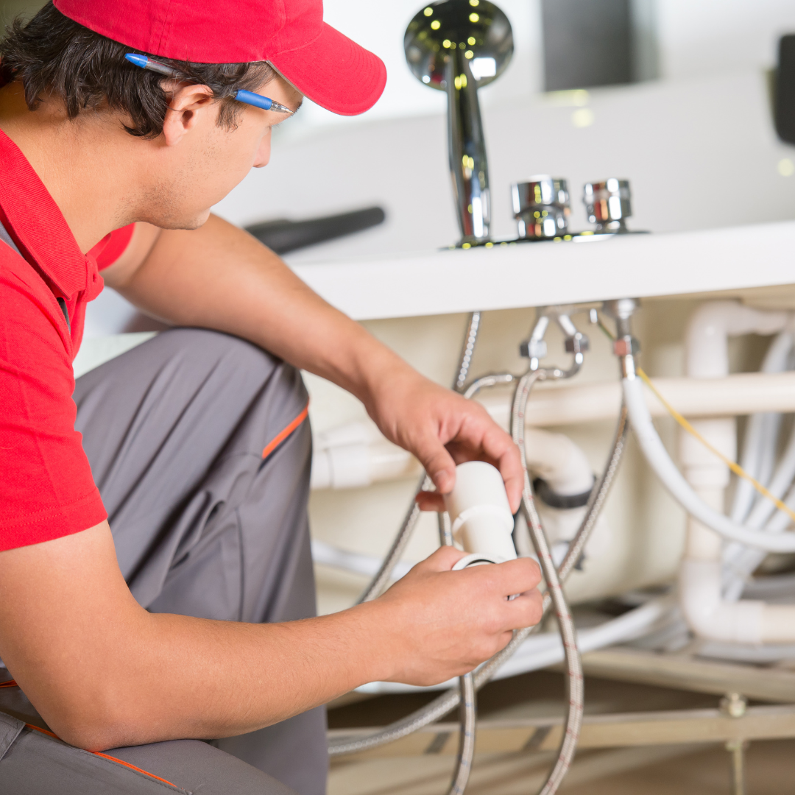

Mold Inspection in Burien, WA
A full-home mold inspection in Burien finds where mold is growing, why it's there, and whether lab sampling is worth adding. It is the right first step when you aren't sure what you're dealing with.

What a professional home mold inspection includes
A mold inspection is a systematic, room-by-room investigation of a home for mold growth and the moisture conditions that cause it. The inspector combines what they can see, what instruments can measure, and what they know about how water moves through buildings. The result is a map of problem areas, not just a yes-or-no answer.
Inspection differs from testing. Testing means collecting samples and sending them to a lab. Inspection is the investigation that decides whether testing is needed and where samples should be taken. In many Burien homes, a skilled inspection alone explains the problem: a fan vented into the attic, a failed wax ring at a toilet, a crawl space with a collapsed vapor barrier. For broader context on when testing pays off, see our guide to mold testing in Burien.
Homes in Gregory Heights and Boulevard Park, many built mid-century over crawl spaces, are frequent candidates for a full inspection.
How a Burien mold inspection company tests your home
Inspectors work from the outside in and from the top down. Most start with the exterior, looking at gutters, downspouts, grading, siding, roof edges and any places where water can collect against the foundation. Then they move through each room, the attic and the crawl space.
- Visual examination. Staining, discoloration, peeling paint, warped trim and visible growth are noted and photographed, with attention to ceilings below bathrooms, exterior corners and window sills.
- Moisture meters. Pin meters measure moisture content in wood and drywall directly. Pinless meters scan larger areas without leaving marks, which helps trace the edges of a wet zone.
- Thermal imaging. An infrared camera shows temperature differences. Evaporating moisture cools a surface, so damp areas often appear as cool patches. Every thermal finding is confirmed with a meter, since cold spots can also come from missing insulation.
- Hygrometer readings. Relative humidity and temperature in each area show whether conditions support growth, and whether a space like a crawl space is wetter than the rooms above it.
- Targeted sampling. When useful, the inspector adds air or surface samples. These are covered on our air quality testing page.
Good inspectors also ask questions. Leak history, when the smell started, which rooms bother you most, and recent remodeling all point them to likely sources faster than instruments alone.
Signs you should book mold inspection near you
- Persistent musty odor. An earthy smell that returns after airing out the house means something is growing, even if you can't see it.
- Recurring stains. Ceiling or wall stains that come back after painting indicate a moisture source that was never fixed.
- Peeling or bubbling paint. Paint lifts when moisture pushes through drywall or plaster from behind.
- Warped floors or trim. Cupped hardwood, swollen baseboards and soft vinyl point to water below or behind the surface.
- Condensation on windows. Water pooling on sills every winter morning wets the framing and drywall beneath it.
- Past water damage. Any leak or flood that was dried with fans only may have left moisture inside walls.
- Spots in closets. Closets on exterior walls stay cold and still, so mold often starts behind clothes and boxes.
- Symptoms at home. Allergy-type symptoms that ease when you leave the house suggest an indoor source worth investigating.
What causes the problems mold inspection uncovers?
Nearly every mold problem traces back to water, and in Burien that water arrives in predictable ways. Rain is the obvious one. Roof flashing, clogged gutters and poor grading let water into walls and foundations during long wet stretches, and cool, cloudy weather slows drying.
Inside the house, plumbing is the most common culprit. Slow leaks at sink traps, braided supply lines, toilet bases, dishwashers, refrigerator ice-maker lines and water heaters can drip for months inside cabinets and wall cavities. Condensation comes next. Homes built before modern energy codes often have single-pane windows, little wall insulation and bathroom fans that move too little air, so daily showers and cooking push moisture onto the coldest surfaces.
Below and above the living space, crawl spaces and attics add their own moisture loads. See the dedicated pages on crawl space inspection and attic inspection for how those areas fail.
What can you check yourself first?
Before booking, a few simple checks help you describe the problem and sometimes solve it.
- Open every sink cabinet with a flashlight. Look for stains, warped panels and drips at the trap and supply connections.
- Check around the base of each toilet for soft flooring or discoloration.
- Run bathroom fans and hold a square of toilet paper to the grille. If it isn't pulled firmly, the fan is moving too little air.
- Look under the water heater and around the washing machine hoses.
- After a heavy rain, walk outside and see where water pools, overflows gutters or runs toward the house.
Pro tipWrite down what you find with dates and photos. Inspectors work faster with a history, and you'll have a record if you need to make an insurance claim later.
What to expect when you hire a mold inspection company
- Interview. The inspector asks about leaks, symptoms, smells, and the age and history of the house.
- Exterior walk. Roof edges, gutters, downspouts, grading, siding and vents are checked for water entry points.
- Interior survey. Each room is examined visually and scanned with moisture meters, with thermal imaging where helpful.
- Attic and crawl space. If accessible, both are entered to check sheathing, framing, insulation, vapor barrier and ventilation.
- Sampling decision. If growth is hidden or its type matters, air or surface samples are collected along with an outdoor control.
- Findings review. Many inspectors walk you through what they saw before leaving.
- Written report. You receive photos, readings, a list of affected areas, any lab results and recommended next steps.
Plan on being home for the visit, and clear a path to the attic hatch, crawl space entry, water heater and electrical panel.
Mold Inspection cost in Burien: what affects the price?
Providers set their own prices for mold inspection in Burien. These are the factors that shape a quote.
| Factor | Effect on the mold inspection quote |
|---|---|
| Square footage | Larger homes take longer to cover thoroughly. |
| Attic and crawl space access | Entering tight spaces adds time and protective gear. |
| Samples added | Each lab sample carries its own fee. |
| Report format | Real estate or insurance reports may need more detail. |
When do you need emergency mold inspection?
Treat it as urgent if a pipe has burst or a water heater has failed and materials are soaked, if sewage has backed up into the house, or if growth is spreading quickly over a large area. Stop the water first, shut off power to wet areas, and call. Drying within the first day or two is what prevents a mold problem from taking hold. Anyone with severe breathing difficulty should get medical care before worrying about the house.
How to hire the best mold inspection company in Burien
Searching for a mold inspector near you in Burien turns up dedicated testing firms, home inspectors who add mold checks, and remediation companies offering free inspections. Each has a different incentive, so ask every company the same questions before you book.
- Are your inspectors certified, and by which organization?
- Which accredited lab analyzes your samples?
- Do you also perform mold remediation?
- What does the written report include, and when do I get it?
- Is pricing flat, or based on square footage and samples?
- How soon can you schedule a visit in Burien?
Credentials, insurance and pricing belong to each independent provider, so confirm them directly before booking mold inspection. One call to (833) 289-9993 connects you with a local mold inspection provider you can put these questions to.
Mold Inspection FAQs for Burien homeowners
How long does a mold inspection take?
Most single-family homes take a couple of hours, depending on size, access to the attic and crawl space, and whether samples are taken. Ask the provider for an estimate when you call.
Will the inspector cut into my walls?
Usually not. Moisture meters and thermal imaging see a lot without damage. Some inspectors drill a small hole to take a wall-cavity air sample, and they should ask first.
Do I need an inspection if I can already see mold?
If the area is small and the cause is obvious, maybe not. If it's larger than a few square feet, keeps coming back, or you don't know where the water is coming from, an inspection finds the source so the fix lasts.
Is a home inspection the same as a mold inspection?
No. A general home inspector notes visible issues across the whole house. A mold inspector spends more time on moisture, uses specialized tools and can collect lab samples.
Should the inspector also be the remediator?
Many homeowners prefer separate companies to avoid a conflict of interest. Ask the provider whether they do both, and how they handle that.
What should I do before the visit?
Don't clean, bleach or paint over suspected mold. Clear access to the attic, crawl space and under sinks, and note any leak history you know about.
Ready to book mold inspection in Burien?
Call and get connected with an independent provider who handles mold inspection for Burien homes.
(833) 289-9993Free call. No obligation to book.